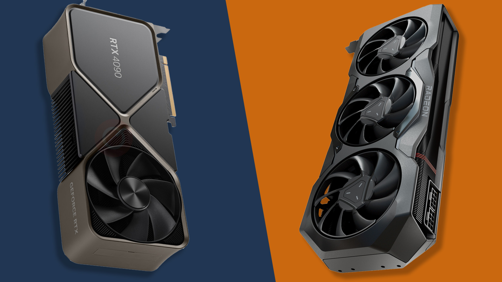

Placa video, sau GPU (Graphics Processing Unit), este una dintre cele mai importante componente atunci când vine vorba de performanța grafică a unui computer. Aceasta gestionează toate calculele necesare pentru a afișa imagini, videoclipuri și animații pe monitor. Cu toate că inițial plăcile video au fost dezvoltate pentru a îmbunătăți redarea grafică a jocurilor și aplicațiilor multimedia, astăzi ele sunt utilizate și pentru sarcini complexe, precum învățarea automată (machine learning), randarea grafică pentru producții cinematografice și chiar pentru criptomining. GPU-urile moderne sunt compuse din mii de nuclee mici care lucrează împreună pentru a procesa datele grafice rapid și eficient. Plăcile video dedicate sunt preferate de gameri și de profesioniștii care lucrează cu software grafic intensiv, deoarece oferă performanțe superioare în comparație cu GPU-urile integrate. În plus, în ultimii ani, GPU-urile au evoluat semnificativ, suportând tehnologii avansate, precum ray tracing, care simulează în mod realist lumina și umbrele în scenele 3D.
Printre cele mai populare companii ce sunt specializate în producerea acestui tip de componentă sunt NVIDIA și AMD, acestea având un monopol absolut asupra pieței.
